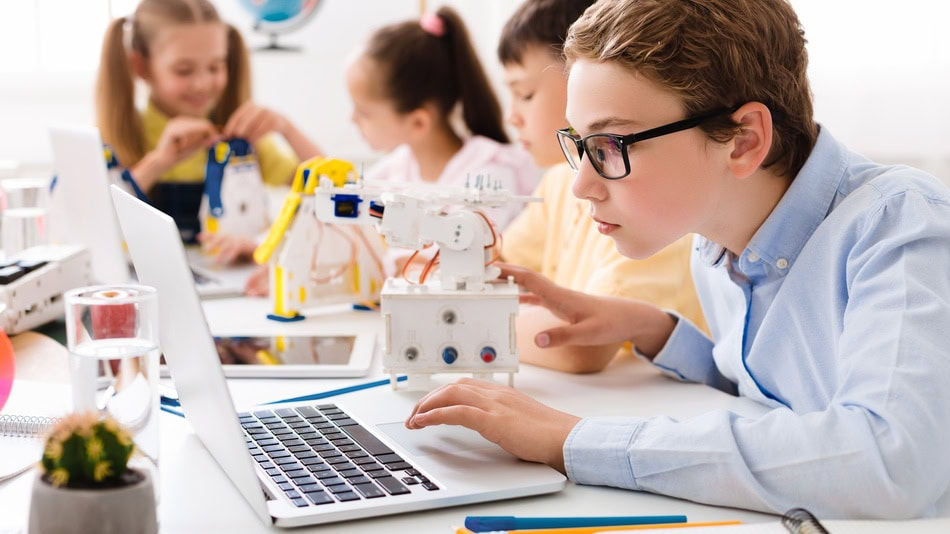

STEAM+ son las siglas en inglés de Science, Technology, Engineering, Arts, and Mathematics,
que en español se traducen como Ciencia, Tecnología, Ingeniería, Artes y Matemáticas.
Se refiere a un enfoque pedagógico que integra estas cinco disciplinas para promover
un aprendizaje más holístico y práctico. En esencia, STEAM busca romper con la enseñanza
tradicional separada por materias y fomentar la resolución de problemas, el pensamiento
crítico y la creatividad a través de la conexión entre estas áreas.
¿Qué abarca la educación enfocada en STEAM+?
Se refiere a la integración entre las áreas de la ciencia, tecnología, ingeniería y matemáticas,
pero el signo + invita a integrar otras áreas del conocimiento; diversos actores escolares y
del contexto para desarrollar proyectos que beneficien el territorio; integrar diferentes
metodologías que inviten a la experimentación, a la lectura del entorno y al análisis de
situaciones problémicas de manera interdisciplinar.
Aclaración: No es una metodología de aprendizaje, no es un modelo pedagógico.

¿Por qué el Ministerio de Educación adopta STEAM+?
“El enfoque educativo STEM+ es una de muchas otras alternativas para inspirar la innovación
educativa, la flexibilización curricular, la integración de diversos tipos de competencias y la
oportunidad para desarrollar prácticas educativas para la formación de ciudadanos locales y
globales con habilidades para afrontar situaciones nuevas o retadoras.”
El enfoque STEAM+ con el Ministerio de Educación aborda:
Problemáticas y oportunidades de interés público: salud, crisis social, alimentación para todos y desarrollo sostenible.
Trayectorias educativas completas con visión prospectiva: aprendizajes situados y significativos para tomar decisiones, construir proyectos de vida y afrontar retos actuales y futuros.
Integración de metodologías activas: aprendizaje basado en proyectos, problemas, gamificación, storytelling, transmedia, aula invertida, realidad aumentada/virtual.
Educación STEAM+ en las regiones de Colombia
Comparación de STEAM en Zonas Urbanas y Rurales
| Región |
Beneficios |
Desventajas |
| Zonas Urbanas |
- Acceso a tecnología avanzada y recursos educativos.
- Oportunidades de colaboración con empresas e instituciones.
- Infraestructura tecnológica sólida: laboratorios, impresoras 3D, kits de robótica y software especializado.
- Conectividad estable con Internet de alta velocidad y dispositivos personales.
- Formación docente continua y acceso a comunidades académicas.
- Apoyo de entidades públicas y privadas para alianzas educativas.
- Mayor participación estudiantil en ferias científicas y eventos de innovación.
- Mayor diversidad de proyectos y enfoques pedagógicos.
|
- Desigualdades en el acceso a recursos entre instituciones.
- Presión por resultados que puede limitar la creatividad.
- Brecha socioeconómica interna entre colegios públicos y privados.
- Competencia por resultados que desplaza la creatividad.
- Proyectos poco contextualizados a la realidad local.
- Falta de conexión con problemáticas locales.
|
| Zonas Rurales |
- Contexto propicio para proyectos aplicados con impacto local.
- Vínculo con saberes ancestrales y comunitarios para enriquecer la innovación.
- Alto nivel de motivación cuando hay acceso a recursos adecuados.
|
- Brecha digital marcada con baja conectividad y equipos limitados.
- Falta de infraestructura física como laboratorios y talleres.
- Formación docente limitada por falta de recursos o transporte.
- Dependencia de proyectos externos para la continuidad de programas STEAM.
|
Estadísticas generales: rural vs urbano
Brechas de género en STEAM/STEM
- Entre 2019 y 2022, el promedio de mujeres graduadas en maestrías STEM fue del 46% y en doctorados del 37%.
- En 2022, estos porcentajes bajaron al excluir áreas como salud (35% en maestrías, 37% en doctorados).
- Solo el 42% de investigadores junior en STEM son mujeres y apenas el 24% de las investigadoras eméritas.
- En PISA 2022, las niñas obtuvieron 9 puntos menos que los niños en matemáticas; el 73% de ellas tuvo desempeño bajo, frente al 69% de los niños.